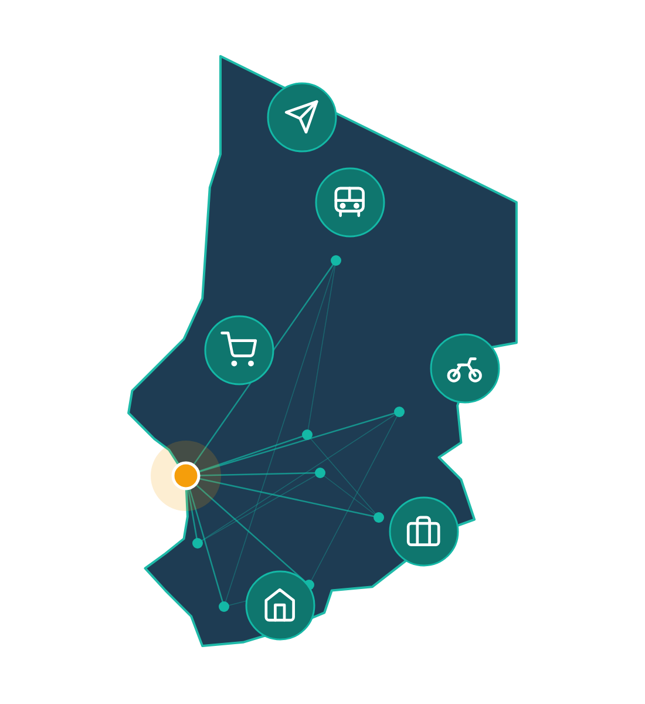
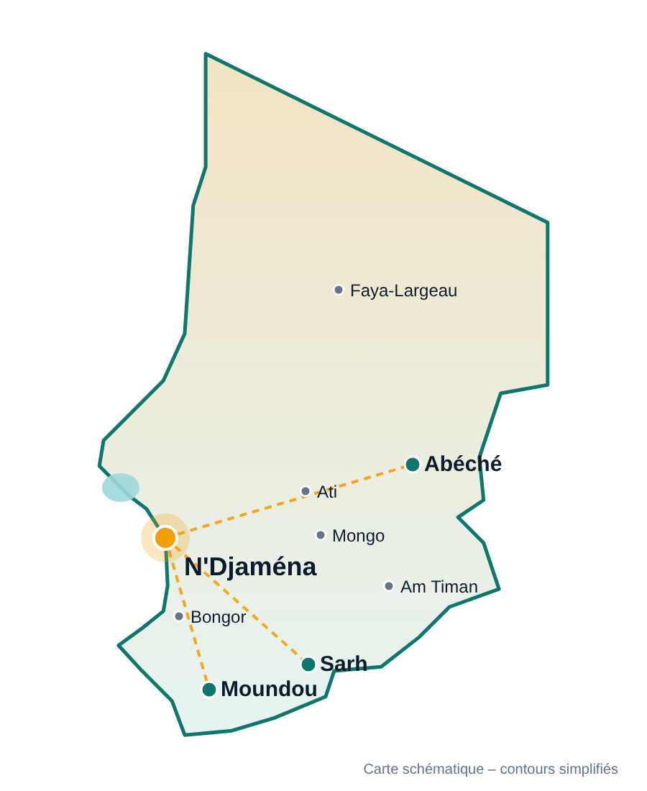
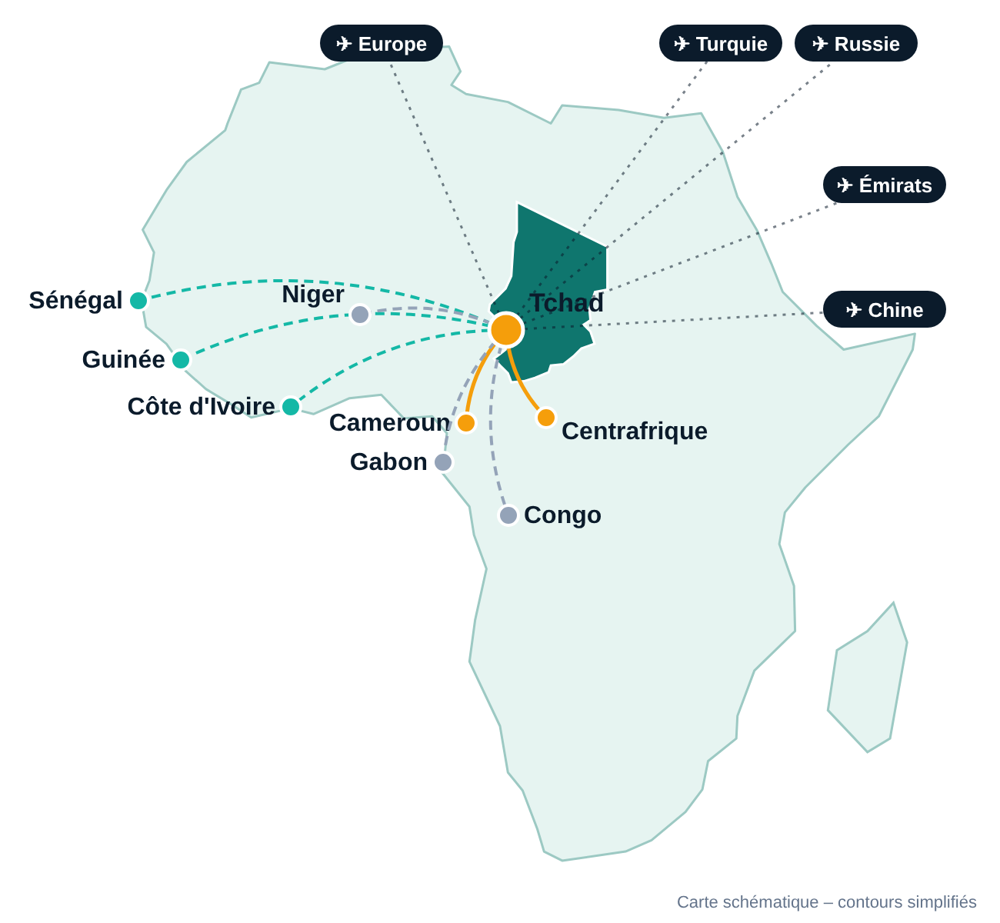

La plateforme numérique multiservices du Tchad : billetterie, mobilité, emploi et immobilier dans un seul environnement digital.
Giscard Destin
Fondateur, ingénieur en intelligence artificielle et data scientist
maousang.vercel.app
Document confidentiel. Les données financières sont prévisionnelles. Les tarifs sont des hypothèses non validées par le marché.

Maousang réunit dans une seule plateforme les services dont les Tchadiens ont besoin chaque jour : acheter un billet de bus, commander un clando ou une livraison, trouver un emploi et trouver un logement. La plateforme est déjà développée et en production. Le fondateur, ingénieur en IA, a financé la conception et le développement.
Nous demandons 15 000 000 FCFA et un accompagnement stratégique. Ils financent l'équipe de lancement, le marketing, les agents de terrain et la structuration juridique, pour atteindre 10 000 inscrits en année 1. Dans le scénario intermédiaire, Maousang devient rentable en année 3. La trésorerie peut être légèrement négative en année 2 (-8,0 M FCFA). Nous prévoyons donc un relais : revenus, prêt d'honneur ou tour d'amorçage.
Mission : connecter les populations, les entreprises, les prestataires et les organisations grâce à des solutions numériques simples, accessibles et intelligentes.
Vision : « Devenir une plateforme de référence pour l'accès aux services numériques au Tchad, avec une expansion en Afrique centrale, en rapprochant les populations des opportunités, des services et des acteurs économiques. »
Conséquences : perte de temps, perte d'argent, prestataires invisibles, ventes manquées, accès difficile à l'information, services peu digitalisés. Pour illustrer le coût de la non-connectivité : les coupures d'Internet de 2024 auraient coûté environ 38 millions USD à l'économie tchadienne (estimation Top10VPN).
| Pôle | Statut | Fonctionnalités | Utilisateurs | Valeur ajoutée |
|---|---|---|---|---|
| 1. Billetterie | Développé | Recherche de voyages, consultation des offres, services de billetterie | Voyageurs, étudiants, compagnies de bus | Moins d'attente ; meilleur remplissage des bus |
| 2. Mobilité – Clando | Développé | Moto-taxis, livraison de repas, de courses et de colis, autres prestataires de mobilité | Citadins, restaurants, commerces, conducteurs, livreurs | Revenus pour les conducteurs ; traçabilité |
| 3. Emploi et ATS | Développé | Offres ; ATS : réception des candidatures, analyse automatisée des CV, classement, présélection, mise en relation | Candidats, PME, ONG, cabinets RH | Tri plus rapide ; candidats visibles |
| 4. Immobilier | Développé | Recherche, location, réservation journalière, annonces, mise en relation | Locataires, voyageurs, propriétaires, agences | Moins de visites inutiles ; biens visibles |
| Annonces, assistant IA | Développé | Publication et promotion ; orientation de l'utilisateur | Tous | Rétention et monétisation |
| 5. Commerce | Phase 2 | Boutiques, catalogue, commandes, paiement, livraison | Commerçants, acheteurs | Vente en ligne pour les PME |
| 6. Billetterie internationale | Phase 2 | Recherche et réservation de vols (Afrique, Turquie, Chine, Russie, Émirats, Europe) | Voyageurs, diaspora, entreprises | Partenariats à signer |
| Indicateur | Valeur | Source |
|---|---|---|
| Population | 21,1 M (oct. 2025) | ONU via DataReportal |
| Population urbaine | 25,1 %, ≈ 5,3 M | DataReportal 2026 |
| N'Djaména | ≈ 1,66 M (2024) | ONU WUP via Macrotrends |
| Connexions mobiles | 15,5 M (fin 2025) | GSMA Intelligence |
| Internautes | 2,79 M (oct. 2025) | Kepios via DataReportal |
| Réseaux sociaux | 2,38 M identités | Kepios via DataReportal |
| Monnaie électronique | 6,25 M comptes (2024) | BEAC, relayé, à confirmer |
| Déficit de logements | ≈ 1,5 M | Gouvernement, nov. 2026 |

Emploi. Le taux de chômage officiel des jeunes (≈ 1,5 %, Banque mondiale) mesure mal la réalité, car l'emploi informel domine. Nous ne l'utilisons pas comme argument. Le besoin se lit plutôt dans la dispersion des offres et la demande des recruteurs pour un tri plus rapide.
Transport et mobilité. Le clando est le transport urbain dominant. La ville a lancé en septembre 2026 un programme d'identification des moto-taxis : la traçabilité devient une attente.
Billetterie. Les liaisons N'Djaména–Moundou, –Sarh et –Abéché coûtent de 12 500 à 25 000 FCFA. Les billets se vendent au guichet, sans grille officielle publiée.
Nous mesurons le marché en utilisateurs actifs, pas en population. La valeur est estimée avec le revenu annuel par utilisateur actif du modèle intermédiaire en A3 (3 774 FCFA).
| Niveau | Méthode | Utilisateurs | Valeur annuelle |
|---|---|---|---|
| TAM | Internautes au Tchad | 2 790 000 | 10,5 Md FCFA |
| SAM | 5,3 M de citadins × 30 % d'usage d'Internet (hypothèse) | 1 588 830 | 6,0 Md FCFA |
| SOM prudent | 5 % du SAM à 3 ans | 79 442 | 300 M FCFA |
| SOM intermédiaire | 10 % du SAM à 3 ans | 158 883 | 600 M FCFA |
| SOM ambitieux | 20 % du SAM à 3 ans | 317 766 | 1 199 M FCFA |
| Acteur | Secteur | Offre observée | Limite identifiable | Différenciation Maousang |
|---|---|---|---|---|
| Chadito | Annonces | Annonces : voitures, location, emploi, électronique ; KYC vendeurs | Pas de mobilité, de billetterie ni d'ATS | Transactions et ATS intégrés |
| Blyt | Mobilité (taxi) | Prix affiché avant la course, chauffeurs identifiés | Mobilité seule | Moto-taxi, livraison et autres pôles |
| SafeClando | Moto-taxi | Réservation de clando à N'Djaména | Mobilité seule | Écosystème multiservices |
| Allons-y Taxi Privé | Mobilité | Réservation de taxi, trilingue | Mobilité seule | Écosystème multiservices |
| emploi.td | Emploi | Offres et recrutement | Pas d'ATS mentionné publiquement | ATS intelligent |
| Alwihda Info | Annonces | Annonces immobilières gratuites (web, SMS) | Annonces non structurées | Recherche filtrée, réservation |
| Agences de bus | Billetterie | Vente au guichet | Peu de vente en ligne publiée | Recherche et comparaison en ligne |
Aucun chiffre d'affaires, nombre d'utilisateurs ou part de marché n'est cité. Wadini et Annoncena : aucune présence publique trouvée sous ces noms (à vérifier).
Avantage stratégique. Contrairement aux plateformes spécialisées dans un seul domaine, Maousang réunit plusieurs services dans un même écosystème. Un utilisateur acquis pour un service en découvre d'autres : cela réduit le coût d'acquisition et augmente la valeur de chaque client.
| Source de revenus | Fonctionnement | Tarif (hypothèse) | Potentiel |
|---|---|---|---|
| 1. Commissions sur transactions | % des courses, livraisons et réservations | 8 à 12 % (mobilité), 10 % (réservations) | Élevé |
| 2. Abonnements professionnels | Visibilité, badge vérifié, statistiques | 5 000 FCFA/mois | Élevé |
| 3. Immobilier sponsorisé | Mise en avant d'une annonce | 5 000 FCFA/mois | Moyen |
| 4. Offres d'emploi payantes | Publication par l'entreprise | 10 000 FCFA/offre | Moyen |
| 5. Services premium recruteurs | ATS : analyse et classement des CV | 25 000 FCFA/mois | Moyen |
| 6. Publicité | Bannières, annonces commerciales | 50 000 FCFA/mois | Moyen |
| 7. Partenariats transporteurs | Commission sur billets | 4 à 6 % du billet | Moyen |
| 8. Frais de réservation | Mise en relation, si applicable | À définir par pôle | Appoint |
Ces tarifs sont des hypothèses de travail. Ils n'ont pas été validés par le marché et seront testés pendant les six premiers mois.
| Mois | Actions principales |
|---|---|
| M1–M2 | Identité et kit de communication ; recrutement des agents ; démonstrations à l'université |
| M3 | Lancement public ; ouverture du parrainage ; première campagne de l'agence |
| M4–M5 | Campagne « Le coût de la non-connectivité » ; partenariats transporteurs |
| M6 | Campagne sur l'emploi et l'ATS ; visites d'entreprises |
| M7–M8 | Campagnes de quartier ; recrutement de restaurants et de commerces pour la livraison |
| M9–M10 | Rentrée universitaire ; seconde vague de sensibilisation |
| M11–M12 | Campagne de fin d'année (voyages des fêtes) ; bilan et plan A2 |
| Poste du budget A1 | Montant (FCFA) |
|---|---|
| Agence de communication | 1 200 000 |
| Web médias et influenceurs | 800 000 |
| Publicité digitale | 600 000 |
| Universités et démonstrations | 400 000 |
| Prospection terrain | 1 000 000 |
| Partenariats | 800 000 |
| Total (dans les 15 M) | 4 800 000 |
| Parrainage (payé sur les revenus) | 1 000 000 |
Les objectifs de croissance sont 10 000, 100 000 puis 1 000 000 d'inscrits. Ce sont des objectifs, pas des données acquises. Le modèle Excel (MAOUSANG_FINANCIAL_MODEL.xlsx) contient toutes les formules ; chaque hypothèse est en bleu et modifiable.
| Scénario intermédiaire | A1 | A2 | A3 |
|---|---|---|---|
| Utilisateurs inscrits (fin) | 10 000 | 100 000 | 1 000 000 |
| Actifs mensuels moyens | 1 750 | 16 500 | 137 500 |
| Prestataires professionnels | 200 | 2 000 | 20 000 |
| Transactions | 34 342 | 323 150 | 2 688 183 |
| Taux de conversion payant | 22,4 % | 18,5 % | 14,9 % |
| Revenu moyen par client payant (FCFA) | 9 188 | 7 562 | 6 319 |
| CA mobilité | 3,4 M | 31,7 M | 264,0 M |
| CA billetterie | 0,4 M | 3,7 M | 30,9 M |
| CA emploi | 3,0 M | 18,0 M | 72,0 M |
| CA immobilier | 1,6 M | 10,2 M | 56,0 M |
| CA abonnements pros | 0,7 M | 7,2 M | 72,0 M |
| CA publicité | 1,2 M | 6,0 M | 24,0 M |
| Chiffre d'affaires total | 10,3 M | 76,8 M | 518,9 M |
| Dépenses opérationnelles | 1,3 M | 14,3 M | 75,6 M |
| Dépenses marketing | 5,8 M | 39,0 M | 180,0 M |
| Masse salariale | 7,5 M | 34,9 M | 82,8 M |
| Coûts techniques et infrastructure | 1,2 M | 6,0 M | 45,0 M |
| Total des dépenses | 15,8 M | 94,2 M | 383,4 M |
| Résultat opérationnel | -5,5 M | -17,4 M | 135,6 M |
| Trésorerie fin d'année (avec 15 M levés) | 9,5 M | -8,0 M | 127,6 M |
| Scénario prudent | A1 | A2 | A3 |
|---|---|---|---|
| Utilisateurs inscrits (fin) | 5 000 | 50 000 | 500 000 |
| Actifs mensuels moyens | 750 | 6 875 | 55 000 |
| Prestataires professionnels | 100 | 1 000 | 10 000 |
| Transactions | 9 683 | 88 567 | 706 867 |
| Taux de conversion payant | 16,6 % | 13,2 % | 10,1 % |
| Revenu moyen par client payant (FCFA) | 9 390 | 7 122 | 5 614 |
| CA mobilité | 0,8 M | 6,9 M | 55,4 M |
| CA billetterie | 0,1 M | 0,8 M | 6,6 M |
| CA emploi | 1,4 M | 7,5 M | 30,0 M |
| CA immobilier | 0,8 M | 5,2 M | 28,0 M |
| CA abonnements pros | 0,2 M | 2,4 M | 24,0 M |
| CA publicité | 0,6 M | 3,0 M | 12,0 M |
| Chiffre d'affaires total | 3,9 M | 25,9 M | 156,0 M |
| Dépenses opérationnelles | 1,1 M | 8,8 M | 34,7 M |
| Dépenses marketing | 5,3 M | 24,5 M | 75,0 M |
| Masse salariale | 7,5 M | 24,4 M | 58,0 M |
| Coûts techniques et infrastructure | 1,2 M | 4,0 M | 20,0 M |
| Total des dépenses | 15,1 M | 61,7 M | 187,6 M |
| Résultat opérationnel | -11,2 M | -35,9 M | -31,6 M |
| Trésorerie fin d'année (avec 15 M levés) | 3,8 M | -32,1 M | -63,7 M |
| Scénario ambitieux | A1 | A2 | A3 |
|---|---|---|---|
| Utilisateurs inscrits (fin) | 12 000 | 120 000 | 1 200 000 |
| Actifs mensuels moyens | 2 400 | 23 100 | 198 000 |
| Prestataires professionnels | 240 | 2 400 | 24 000 |
| Transactions | 66 180 | 635 573 | 5 437 400 |
| Taux de conversion payant | 30,0 % | 25,3 % | 21,0 % |
| Revenu moyen par client payant (FCFA) | 11 747 | 9 919 | 8 677 |
| CA mobilité | 9,3 M | 89,8 M | 769,8 M |
| CA billetterie | 0,9 M | 8,3 M | 71,3 M |
| CA emploi | 5,6 M | 31,5 M | 126,0 M |
| CA immobilier | 2,4 M | 15,8 M | 84,0 M |
| CA abonnements pros | 1,2 M | 11,5 M | 115,2 M |
| CA publicité | 1,8 M | 9,0 M | 36,0 M |
| Chiffre d'affaires total | 21,1 M | 165,9 M | 1 202,3 M |
| Dépenses opérationnelles | 1,6 M | 20,0 M | 136,1 M |
| Dépenses marketing | 6,0 M | 55,8 M | 308,0 M |
| Masse salariale | 7,5 M | 52,4 M | 124,2 M |
| Coûts techniques et infrastructure | 1,2 M | 8,0 M | 80,0 M |
| Total des dépenses | 16,3 M | 136,2 M | 648,3 M |
| Résultat opérationnel | 4,8 M | 29,8 M | 554,0 M |
| Trésorerie fin d'année (avec 15 M levés) | 19,8 M | 49,6 M | 603,6 M |
Déploiement à N'Djaména ; premiers utilisateurs ; réseau de prestataires ; extension à Moundou, Abéché et Sarh ; amélioration de l'expérience utilisateur.
Commerce : boutiques numériques, catalogue, commandes, paiements, mise en relation vendeurs-acheteurs, livraison.
Billetterie internationale : vols vers l'Afrique, la Turquie, la Chine, la Russie, les Émirats et l'Europe. Partenariats nécessaires : compagnies aériennes, agences de voyages, fournisseurs de réservation (systèmes de distribution, consolidateurs). Aucun n'est signé à ce jour.
Ordre proposé : Cameroun et Centrafrique (même monnaie et même banque centrale, corridor Douala–N'Djaména), puis Sénégal, Côte d'Ivoire et Guinée.

| Pays | Population | Internautes | Pénétration | Atout | Accessibilité |
|---|---|---|---|---|---|
| Cameroun | 29,5 M | 12,4 M | 41,9 % | Grand marché, corridor commercial | CEMAC, XAF, francophone |
| Centrafrique | 5,42 M | 0,84 M | 15,5 % | Voisin, peu de concurrence | CEMAC, XAF ; marché petit |
| Sénégal | 18,7 M | 11,3 M | 60,6 % | Forte adoption numérique | UEMOA, XOF ; concurrence forte |
| Côte d'Ivoire | 32,3 M | 12,8 M | 39,6 % | Grand marché, paiement mobile mûr | UEMOA, XOF |
| Guinée | 14,9 M | 3,96 M | 26,5 % | Croissance du mobile | Franc guinéen |
Source : DataReportal Digital 2025 (janvier 2025).
| Poste | Montant (FCFA) | Contenu |
|---|---|---|
| Recrutement et rémunération | 4 500 000 | Resp. commercial, resp. marketing (150 000/mois) et support (75 000/mois), 12 mois |
| Marketing et communication | 3 000 000 | Agence, campagnes, influenceurs, événements |
| Agents de terrain | 3 000 000 | 4 agents à temps partiel (62 500/mois) + primes |
| Infrastructure technique | 1 200 000 | Hébergement, base de données, SMS, cartes, stores |
| Prospection commerciale | 1 000 000 | Supports, déplacements, démonstrations |
| Administratif et juridique | 1 000 000 | Immatriculation, CGU, protection des données, comptabilité |
| Partenariats | 800 000 | Paiement mobile, transporteurs, universités |
| Fonds de roulement | 500 000 | Réserve de sécurité |
| Total | 15 000 000 |
| Catégorie | Contenu | Financement |
|---|---|---|
| Dépenses déjà réalisées | Conception, développement et mise en production de la plateforme | Fondateur (non couvert par la levée) |
| Apport du fondateur | Temps et compétences ; travail non rémunéré en A1 (direction générale et technique) | Apport en industrie, valorisation à préciser |
| Besoin financier restant | Lancement commercial sur 12 mois | 15 000 000 FCFA demandés |
| Dépenses futures | A2–A3 : équipe élargie, marketing, infrastructure | Chiffre d'affaires et, si besoin, tour d'amorçage |
Ventilation indicative, à affiner selon les devis réels.
| Poste | Effectif A1 | Effectif A2 | Effectif A3 | Salaire mensuel A1 | Salaire mensuel A3 | Coût annuel A1 | Coût annuel A3 |
|---|---|---|---|---|---|---|---|
| Directeur général (fondateur) | 1 | 1 | 1 | 0 | 500 000 | 0 | 6 000 000 |
| Responsable technique | 0 | 1 | 1 | 0 | 450 000 | 0 | 5 400 000 |
| Développeurs | 0 | 1 | 4 | 0 | 300 000 | 0 | 14 400 000 |
| Responsable commercial et partenariats | 1 | 1 | 1 | 150 000 | 400 000 | 1 800 000 | 4 800 000 |
| Responsable marketing et communication | 1 | 1 | 1 | 150 000 | 400 000 | 1 800 000 | 4 800 000 |
| Responsable administratif et financier | 0 | 1 | 1 | 0 | 350 000 | 0 | 4 200 000 |
| Chargés de partenariats / commerciaux | 0 | 1 | 4 | 0 | 150 000 | 0 | 7 200 000 |
| Agents de terrain | 4 | 10 | 25 | 62 500 | 80 000 | 3 000 000 | 24 000 000 |
| Support client | 1 | 4 | 10 | 75 000 | 100 000 | 900 000 | 12 000 000 |
| Total | 8 | 21 | 48 | 7 500 000 | 82 800 000 |
Salaires mensuels bruts estimatifs en FCFA, à valider avec un cabinet RH et le Code du travail. Recrutement progressif selon la croissance et les moyens disponibles.
| Partenaire | Ce que Maousang attend | Ce que le partenaire gagne |
|---|---|---|
| Ministères et institutions | Reconnaissance, accès aux programmes numériques et d'emploi | Un canal de digitalisation des services |
| Banques et établissements financiers | Financement, comptes professionnels | Nouveaux clients (prestataires, PME) |
| Opérateurs de paiement mobile | Intégration du paiement | Volume de transactions |
| Compagnies de transport | Accès aux horaires et à la vente | Remplissage, vente en ligne |
| Agences de voyages | Offres nationales et internationales | Nouveaux clients |
| Agences immobilières | Annonces vérifiées | Visibilité, clients qualifiés |
| Entreprises de livraison | Capacité logistique | Commandes supplémentaires |
| Universités et écoles | Accès aux étudiants, stages | Insertion des diplômés |
| Entreprises privées | Offres d'emploi, publicité | Recrutement plus rapide |
| Médias et agences de communication | Visibilité, campagnes | Contenus, budgets publicitaires |
| Incubateurs | Accompagnement, réseau | Une startup déjà en production |
Aucun partenariat n'est signé à la date de ce document.
| Risque | Réponse |
|---|---|
| Faible usage d'Internet (≈ 13 %) | Cibler d'abord les internautes urbains ; interface légère ; assistance par agents de terrain |
| Coupures d'Internet | Fonctions hors ligne simples, SMS de confirmation, relais par les agents |
| Adoption lente du paiement en ligne | Paiement mobile et espèces au démarrage |
| Confiance et sécurité (clando, annonces) | Vérification des prestataires, notation, signalement |
| Dispersion sur trop de pôles | Priorité à la mobilité et à l'emploi ; pôles suivants selon la traction |
| Trésorerie en A2 | Recrutement indexé sur le CA ; relais de financement préparé dès le M9 |
| Réglementation (données, transport) | Conseil juridique dès l'A1 ; dialogue avec la mairie et les ministères |
Un problème réel. Une solution déjà en production. Un marché jeune où le mobile progresse. Huit sources de revenus. Une expansion par étapes. Des emplois. Un fondateur engagé.
Nous demandons 15 000 000 FCFA et un accompagnement stratégique pour lancer la croissance de Maousang.
MAOUSANG — Connecter les services, rapprocher les opportunités et construire l'économie numérique de demain.
Giscard Destin, fondateur · maousang.vercel.app
Du démarrage aux fonctionnalités. Les emplacements vides sont remplis automatiquement lorsque les captures existent dans assets/captures/ (voir LISEZ-MOI.md).
Sources détaillées, dates et liens : MAOUSANG_SOURCES.md.